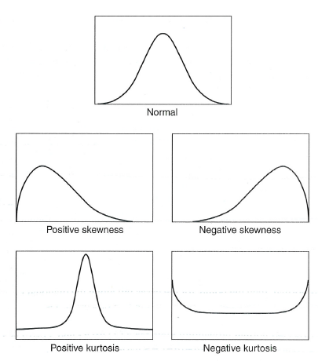

HPS301: Psychology Research Methods (Intermediate)
Week 1: Experimental Design
LO1
Understand the five approaches to research
Experimental Research
- Researcher Control: The researcher controls all aspects of the study, especially participants’ experiences.
- Manipulation of Variables: The researcher deliberately manipulates predictor variables (IVs) while allowing the outcome variable (DV) to vary naturally.
- Causal Relationships: The goal is to determine if changes in IVs cause changes in DVs.
- Control of Other Factors: Everything else is kept constant or balanced to isolate the effect of IVs on DVs.
- Randomisation: Used to assign participants to different groups to minimize systematic differences between them.
- Confounders: Factors other than IVs that might influence results (e.g., diet in smoking studies).
- Improper vs. Proper Experimentation:
- Observing smokers vs. non-smokers is not a true experiment due to lack of researcher control.
- A proper experiment (though unethical) would involve randomly assigning smoking status to participants to ensure groups differ only by that factor.
- Ethical Concerns: True experiments on harmful behaviours (e.g., smoking) would be unethical, despite their scientific rigour.
Quasi-Experimental Research
- Definition: Similar to experimental research, but lacks random assignment of participants to conditions.
- Key Feature: Researchers manipulate IVs but cannot fully control group allocation, often due to ethical or practical constraints. Some practical examples include gender, class level, between schools.
- Purpose: To examine cause-and-effect relationships when true experiments aren’t feasible.
- Example: Studying the effects of a new teaching method by comparing students in different schools (without randomly assigning them).
Non-Experimental Research
- Definition: Any research where the researcher does not actively manipulate variables.
- Key Feature: Observes relationships and patterns without intervention or control over variables.
- Purpose: To explore phenomena that cannot be experimentally tested due to ethical, logistical, or practical reasons.
- Example: Studying the effects of smoking on health by observing existing smokers and non-smokers.
Correlational Research
- Definition: A type of non-experimental research that examines the relationship between two or more variables without manipulation.
- Key Feature: Measures how strongly variables are associated (positive, negative, or no correlation) but does not imply causation.
- Purpose: To identify patterns and potential connections between variables.
- Example: Investigating the relationship between social media use and anxiety levels.
Problems with Correlational Research
Third Variable Problem
- Definition
- The third-variable problem refers to a situation in research or statistical analysis where two variables appear to be related, but their relationship is actually being influenced by a third, unexamined variable.
- This third variable can create a spurious or misleading correlation between the first two, making it seem like they are directly related when in fact they may not be.
- Example:
- Suppose there’s a correlation between ice cream sales and the number of drowning incidents.
- A researcher might initially conclude that ice cream sales cause drowning, or vice versa.
- However, the third variable, temperature, may actually be influencing both.
- Higher temperatures lead to more people buying ice cream and also more people swimming, which increases the likelihood of drownings.
- The third variable, temperature, is what’s actually driving the observed correlation.
Directionality Problem
- Definition:
- The directionality problem in a correlational study design refers to the difficulty in determining the direction of the relationship between two correlated variables.
- In a correlational study, researchers observe that two variables are related, but the study design does not allow them to determine whether one variable causes the other, or if the relationship is the reverse, or if both variables influence each other.
- Example:
- If there is a correlation between hours spent studying and academic performance, we can’t tell from the data alone whether studying more leads to better academic performance, or if better academic performance leads students to study more.
- Similarly, a correlation between stress and health problems could be interpreted in two ways: does stress cause health problems, or do pre-existing health problems lead to increased stress?
- Conclusion:
- The directionality problem arises because correlational studies only show that two variables change together, but they don’t provide insight into which variable influences the other.
- Establishing cause-and-effect relationships typically requires experimental research, where the researcher manipulates one variable and observes its effect on another, controlling for other factors.
Descriptive Research
- Definition: A research approach that aims to systematically describe characteristics, behaviours, or phenomena without testing relationships between variables.
- Key Feature: Focuses on what exists rather than why it happens. Can use surveys, observations, case studies, etc.
- Purpose: To provide a detailed and accurate account of a subject.
- Example: Conducting a survey to determine the average screen time of teenagers per day.
Selecting between these types of design

LO2
Examine internal and external validity and some of the main threats
Internal validity.
- Internal validity refers to how well a study is conducted and whether it accurately establishes a cause-and-effect relationship between the independent and dependent variables.
- A study with high internal validity ensures that changes in the dependent variable are due to the independent variable and not due to confounding factors or biases.
What is an extraneous variable?
- Definition:
- An extraneous variable is any variable that is not the independent variable in a study but could still influence the dependent variable.
- These are variables that are not of primary interest in the research but can introduce unwanted variation or noise, potentially confounding the results.
- If not controlled, extraneous variables can create misleading conclusions because they may be affecting the outcome of the study, making it difficult to determine whether the observed effects are due to the independent variable or to these other variables.
- Example:
- In a study examining the effect of a new study technique on test
scores, extraneous variables might include factors like:
- Amount of sleep participants had before the test.
- Prior knowledge or experience in the subject.
- Test-taking anxiety.
- Environmental factors like room temperature or noise.
- In a study examining the effect of a new study technique on test
scores, extraneous variables might include factors like:
- While extraneous variables are not the focus of the study, researchers often try to control for them to ensure that the results reflect the actual relationship between the independent and dependent variables.
What is a confounding variable?
- A confounding variable is a variable that influences both the independent variable and the dependent variable, creating a false or misleading association between them.
- This can make it seem like there is a direct relationship when, in
reality, the effect is due to the confounding factor.
- Example:
- If a study finds that people who drink more coffee tend to have higher rates of heart disease, a confounding variable could be smoking.
- If coffee drinkers are more likely to smoke, and smoking causes heart disease, the relationship between coffee and heart disease might be misleading.
- Example:
- How to Address Confounding:
- Randomization (in experiments).
- Matching (pairing subjects with similar characteristics).
- Statistical Controls (using regression models to account for confounders).
- Randomization (in experiments).
What is Assignment Bias?
- Definition: Occurs when participants are not randomly assigned to different study conditions, leading to pre-existing differences between groups.
- Confounding Variables: Differences between groups (e.g., age, prior knowledge, motivation) may influence the results, making it unclear if the independent variable (IV) truly caused the observed effect.
- Misleading Causal Conclusions: If groups differ systematically before the study begins, any differences in outcomes may be due to these pre-existing characteristics rather than the manipulated variable.
- Minimising Assignment Bias:
- Random Assignment: Ensures participants are equally likely to be in any group, balancing out potential confounding factors.
- Matching: If random assignment isn’t possible, researchers can match participants on key characteristics (e.g., age, prior knowledge) across groups.
- Statistical Controls: Techniques like covariate analysis (ANCOVA) can help adjust for initial group differences.
List and explain five time-related threats to internal validity.
- History
- Definition: History effects refer to external events or experiences that occur during a study and affect participants’ behaviour or responses, outside of the independent variable (IV) being studied.
- Affect on Internal Validity:
- Confounding Factors: If an external event influences participants differently across study conditions, it becomes unclear whether the IV or the event caused the observed changes.
- Misattribution of Cause: Researchers might mistakenly attribute changes in the dependent variable (DV) to the experimental manipulation, rather than the historical event.
- Example of History Threats
- Educational Study: A school implements a new reading program, and students’ reading scores improve. However, at the same time, a popular reading app is introduced nationwide, which might have contributed to the improvement.
- Health Intervention Study: A study tests a new exercise program, but midway through, a national health campaign promotes physical activity, leading to increased exercise habits across all groups.
- Minimising History Threats
- Use a Control Group: If both experimental and control groups experience the external event, researchers can compare the results to determine if the event had an impact.
- Shorten Study Duration: Reducing the study time frame minimizes the chance of external events occurring.
- Record External Events: Monitoring external factors helps researchers interpret their potential influence on results.
- Maturation
- Definition: Maturation effects
refer to natural changes in participants over time that occur
independently of the independent variable (IV) and may
influence study outcomes.
- Affect on Internal Validity:
- Confounding Variables: If participants naturally
improve or change over time (e.g., due to aging, learning, fatigue), it
becomes difficult to determine whether the observed effects are due to
the IV or simply natural progression.
- Misattribution of Cause: Researchers might
incorrectly attribute changes in the dependent variable
(DV) to their experimental manipulation rather than normal development
or personal growth.
- Confounding Variables: If participants naturally
improve or change over time (e.g., due to aging, learning, fatigue), it
becomes difficult to determine whether the observed effects are due to
the IV or simply natural progression.
- Examples of Maturation Threats
- Child Development Study: A study examines the
impact of a new reading program on young children over six months.
However, children naturally develop better reading skills over time,
making it unclear if the program itself caused the improvement.
- Therapy Effectiveness Study: A study tests whether
a stress management program reduces anxiety in college students over a
semester. Some students may experience reduced stress simply due to
adjusting to college life, not because of the
program.
- Child Development Study: A study examines the
impact of a new reading program on young children over six months.
However, children naturally develop better reading skills over time,
making it unclear if the program itself caused the improvement.
- Minimising Maturation Threats
- Use a Control Group: A comparison group that does
not receive the intervention helps distinguish between changes due to
the IV and changes due to natural maturation.
- Shorten Study Duration: Reducing the study time
frame minimizes the impact of natural growth or change.
- Measure Baseline Trends: Collecting data at
multiple points before the intervention helps determine if changes were
already occurring.
- Use a Control Group: A comparison group that does
not receive the intervention helps distinguish between changes due to
the IV and changes due to natural maturation.
- Instrumentation
- Definition: Instrumentation
effects occur when changes in measurement tools, procedures, or
observers affect the results of a study, rather than the independent
variable (IV).
- Affect on Internal Validity:
- Inconsistent Measurement: If the way data is
collected changes over time, differences in results may be due to
changes in measurement rather than actual differences
in the dependent variable (DV).
- Observer Bias: If human raters change how they
interpret responses over time (e.g., becoming more lenient or strict),
it threatens the validity of the study.
- Equipment Changes: If instruments (e.g., scales,
sensors, software) are updated or malfunction during a study, results
may be inconsistent.
- Inconsistent Measurement: If the way data is
collected changes over time, differences in results may be due to
changes in measurement rather than actual differences
in the dependent variable (DV).
- Examples of Instrumentation Threats
- Educational Study: A study measures student writing
skills using two different grading rubrics at different time points,
making it unclear whether score changes reflect true improvement or just
differences in grading criteria.
- Health Study: A researcher measures participants’
blood pressure before and after a treatment, but switches to a different
blood pressure monitor midway through the study, leading to measurement
inconsistencies.
- Psychological Study: A therapist rates patients’
anxiety levels throughout a study but gradually becomes more lenient in
scoring, causing apparent reductions in anxiety that are actually due to
observer drift, not real change.
- Educational Study: A study measures student writing
skills using two different grading rubrics at different time points,
making it unclear whether score changes reflect true improvement or just
differences in grading criteria.
- Minimising Instrumentation Threats
- Standardize Measurement Procedures: Use the same
tools, tests, or rating criteria throughout the study.
- Train Observers Consistently: Ensure raters or
interviewers apply the same standards over time.
- Calibrate Equipment: Regularly check and maintain
measurement tools to prevent errors.
- Use Automated or Objective Measures: Reduce human
bias by relying on consistent, computerized assessments when
possible.
- Standardize Measurement Procedures: Use the same
tools, tests, or rating criteria throughout the study.
- Testing Effects
- Definition: Testing effects occur
when taking a test or being measured multiple times influences
participants’ performance, rather than the independent variable (IV).
This happens when prior exposure to a test affects later
responses.
- Affect on Internal Validity:
- Practice Effect: Participants may improve simply
because they have seen the test before and become familiar with its
format, not because of the IV.
- Fatigue Effect: If participants take multiple
tests, they may become tired or bored, leading to worse
performance over time.
- Sensitisation: Repeated testing can make
participants more aware of the study’s purpose, potentially influencing
their behaviour.
- Practice Effect: Participants may improve simply
because they have seen the test before and become familiar with its
format, not because of the IV.
- Examples of Testing Effects:
- Educational Study: Students take a math test before
and after a tutoring program. If scores improve, it could be due to
familiarity with the test rather than the tutoring itself.
- Psychological Study: A study measures anxiety
levels using the same questionnaire at different time points.
Participants may change their responses based on previous exposure, not
real changes in anxiety.
- Physical Performance Study: Athletes perform a
strength test multiple times. They may improve just by learning
how to take the test better, not because of actual strength
gains.
- Psychological Study: A study measures anxiety
levels using the same questionnaire at different time points.
Participants may change their responses based on previous exposure, not
real changes in anxiety.
- Minimising Testing Effects:
- Use a Control Group: If both the experimental and
control groups take the test multiple times, researchers can compare
results to determine if the IV truly caused changes. - Use
Alternate Test Versions: Changing the wording, order, or format
of the test reduces practice effects.
- Increase Time Between Tests: Spacing out testing
sessions helps minimize memory effects.
- Counterbalancing: Varying the order in which tests
are presented reduces systematic bias.
- Use a Control Group: If both the experimental and
control groups take the test multiple times, researchers can compare
results to determine if the IV truly caused changes. - Use
Alternate Test Versions: Changing the wording, order, or format
of the test reduces practice effects.
- Regression to the Mean
- Definition: Regression to the mean
occurs when extreme scores on a measurement naturally move closer to the
average (mean) upon retesting, (regardless of any intervention or
treatment), which can create the illusion of change when none has truly
occurred.
- Affect on Internal Validity:
- Misinterpreted Effects: If a study selects
participants based on extreme initial scores (e.g., very high anxiety,
very low test scores), their later scores may improve or decline
naturally, not because of the independent variable
(IV).
- False Causal Conclusions: Researchers might
mistakenly attribute score changes to an intervention, when in reality,
participants were just moving toward average levels naturally.
- Misinterpreted Effects: If a study selects
participants based on extreme initial scores (e.g., very high anxiety,
very low test scores), their later scores may improve or decline
naturally, not because of the independent variable
(IV).
- Examples:
- Educational Study: A program targets students with
extremely low test scores. Their scores improve on the second test, but
this may happen naturally rather than because of the
program.
- Medical Study: A new treatment is given to patients
with very high blood pressure. Over time, their blood pressure
decreases, but this could be natural fluctuation rather
than the effect of the treatment.
- Sports Performance Study: Coaches implement a new
training method after an athlete’s worst performance.
The athlete improves in the next game, but this may be due to
natural performance variation, not the training.
- Educational Study: A program targets students with
extremely low test scores. Their scores improve on the second test, but
this may happen naturally rather than because of the
program.
- Minimising Regression to the Mean:
- Use a Control Group: If both the experimental and
control groups experience similar changes, regression to the mean is
likely the cause rather than the IV.
- Avoid Selecting Based on Extreme Scores: If
possible, choose a more representative sample rather than only extreme
cases.
- Multiple Baseline Measurements: Taking several
pre-test measurements helps identify natural fluctuations before the
intervention.
- Use a Control Group: If both the experimental and
control groups experience similar changes, regression to the mean is
likely the cause rather than the IV.
External Validity
- Definition: External validity refers to how well
study findings generalise to real-life settings.
- Key Concern: If results don’t apply beyond the
study’s specific conditions (tasks, environment, participants), the
study lacks external validity.
- Common Issue: Many psychology studies rely on
undergraduate psychology students, which may limit
generalisation to a wider population.
- External validity is at risk If psychology students differ from the
general population in ways relevant to the study.
- If differences are irrelevant to the study (e.g.,
visual illusion research), external validity remains intact.
- External validity is at risk If psychology students differ from the
general population in ways relevant to the study.
- Other Threats to External Validity:
- Participants may respond differently in a study
than in real life.
- Lab experiments might not reflect real-world scenarios (e.g., learning tasks in a study vs. actual learning experiences).
- Participants may respond differently in a study
than in real life.
What is selection and volunteer bias?
- Selection bias occurs when the way participants are chosen for a study systematically affects the results, making the sample unrepresentative of the population, potentially leading to inaccurate conclusions. - Example: A study on the effects of exercise on mental health recruits participants from a gym. - Since gym-goers are already likely to be more active and health-conscious, the study may overestimate the benefits of exercise compared to the general population. - Volunteer bias happens when people who choose to participate in a study differ significantly from those who don’t, leading to non-generalisable results. - Example: A study on stress levels recruits participants by asking people to sign up. - Those who volunteer might already be more health-conscious or less stressed, making the results not reflective of the general population. - How to Reduce These Biases? - Random Sampling: Ensuring every member of the target population has an equal chance of being included. - Stratified Sampling: Dividing the population into subgroups and randomly selecting participants from each. - Reducing Barriers to Participation: Making studies more accessible to a diverse range of people.
How does selection bias limit the external validity of a study?
Selection bias occurs when the participants in a study are not representative of the broader population, leading to limited external validity (the ability to generalize findings to other people, settings, or times). Below are key ways selection bias reduces external validity:
- Unrepresentative Sample
- Issue: If participants are chosen in a way that
systematically differs from the target population, the results may not
apply to others.
- Example: A study on workplace stress conducted only
on executives may not generalise to lower-level employees.
- Issue: If participants are chosen in a way that
systematically differs from the target population, the results may not
apply to others.
- Self-Selection Bias
- Issue: When individuals opt into a study
voluntarily, they may differ from those who do not participate.
- Example: If a study on a new diet program only
includes people who are highly motivated to lose weight, the results may
not apply to the general population.
- Issue: When individuals opt into a study
voluntarily, they may differ from those who do not participate.
- Convenience Sampling
- Issue: When participants are selected based on ease
of access (e.g., college students in psychology studies), the sample may
not reflect the broader population.
- Example: A study on consumer behavior using only
university students may not apply to older adults or different
socio-economic groups.
- Issue: When participants are selected based on ease
of access (e.g., college students in psychology studies), the sample may
not reflect the broader population.
- Geographic and Cultural Limitations
- Issue: If a study is conducted in a specific region
or culture, its findings may not apply to other locations.
- Example: A study on social attitudes in an urban
U.S. city may not be valid in rural areas or other countries.
- Issue: If a study is conducted in a specific region
or culture, its findings may not apply to other locations.
- Exclusion of Certain Groups
- Issue: If certain demographics (e.g., older adults,
people with disabilities, non-English speakers) are excluded, the
findings may not apply to them.
- Example: A clinical trial that excludes elderly
patients may not provide valid results for how a medication affects
older populations.
- Issue: If certain demographics (e.g., older adults,
people with disabilities, non-English speakers) are excluded, the
findings may not apply to them.
- How to Reduce Selection Bias and Improve External
Validity
- Use Random Sampling: Select participants randomly
to ensure a representative sample.
- Increase Sample Diversity: Include individuals from
different backgrounds, locations, and demographics.
- Compare Study Sample to Population: Check whether
key characteristics of the sample match the target population.
- Use Multiple Study Sites: Conduct research in different locations to enhance generalizability.
- Use Random Sampling: Select participants randomly
to ensure a representative sample.
What is the novelty effect, and how can it limit the external validity of a study?
The novelty effect refers to a temporary improvement in performance or behaviour when individuals are exposed to something new, simply because it is novel or different, rather than due to any inherent effectiveness of the change itself.
Key Characteristics of the Novelty Effect:
- Short-Lived Impact – The boost in performance or
engagement often fades as participants become accustomed to the new
stimulus.
- Not Due to the Intervention’s True Effectiveness –
The improvement is caused by excitement, curiosity, or increased
attention, not by the actual quality of the change.
- Common in Technology and Education – Seen when new teaching methods, workplace tools, or systems are introduced, making it difficult to determine if they are genuinely beneficial.
Examples of the Novelty Effect:
- Education: A new learning app initially increases
student engagement, but after a few weeks, interest and performance
return to previous levels.
- Workplace Productivity: Employees become more
productive after the introduction of a new project management tool, but
the boost wears off as the novelty fades.
- Medical Treatments: Patients report feeling better after trying a new therapy, but the effect diminishes as they adjust to it.
How to Minimize the Novelty Effect in Research:
- Long-Term Studies: Measure effects over an extended
period to see if improvements persist.
- Control Groups: Compare new interventions with
stable alternatives to rule out novelty-driven gains.
- Multiple Testing Points: Conduct follow-ups after the initial introduction phase to check for lasting effects.
How can experimenter characteristics limit the external validity of a study?
Experimenter characteristics refer to the personal attributes of the researcher (e.g., gender, age, personality, demeanour) that may unintentionally influence participants’ responses.
Ways Experimenter Characteristics Affect External Validity:
- Demand Characteristics
- Issue: Participants may modify their behaviour
based on perceived expectations from the experimenter.
- Example: If a friendly researcher unconsciously
encourages positive responses, participants might over report
satisfaction levels.
- Demographic Effects
- Issue: Characteristics like gender, age, or
ethnicity may influence how participants respond, making findings less
generalisable.
- Example: A study on leadership effectiveness led by
a male experimenter may yield different results compared to one
conducted by a female experimenter.
- Interpersonal Rapport
- Issue: Experimenters with varying levels of warmth
or enthusiasm can alter participant engagement, affecting results.
- Example: A highly enthusiastic researcher might
increase motivation in participants, leading to higher performance that
wouldn’t generalise to real-world settings.
- Experimenter Bias
- Issue: The researcher’s expectations may subtly
influence data collection, either through tone, body language, or
selective interpretation of results.
- Example: In a study on creativity, an experimenter
who values originality might unconsciously rate responses higher when
evaluating participants’ ideas.
- Limited Generalisability Across Settings
- Issue: If the experimenter’s characteristics are
unique or unusual, findings may not apply in different contexts.
- Example: A mindfulness study conducted by an
experienced meditation instructor might not generalise to workplace
settings where mindfulness is taught by regular employees.
- Ways to Minimise Experimenter Effects and Improve External
Validity:
- Standardised Procedures: Use scripted instructions
to reduce variability in researcher behaviour.
- Blinded Studies: Have researchers unaware of the
hypothesis or participant conditions to prevent bias.
- Multiple Experimenters: Involve researchers with
diverse characteristics to test for consistency across different
individuals.
- Automated Data Collection: Use surveys, online tools, or AI-based assessments to minimise human influence.
- Standardised Procedures: Use scripted instructions
to reduce variability in researcher behaviour.
What is assessment sensitisation?
Here’s your response formatted in R Markdown (.rmd) with Australian English spelling:
Assessment sensitisation (also called pre-test sensitisation) occurs when the process of measuring or assessing participants influences their responses or behaviour in a study.
This effect can reduce the validity of research findings, as the observed outcomes may be due to the assessment itself rather than the actual intervention or treatment.
Key Characteristics of Assessment Sensitisation
- Influences Participant Behaviour – Participants may
change their responses simply because they are aware they are being
assessed.
- Interacts with the Intervention – Exposure to a
pre-test or repeated assessments may alter how participants react to the
independent variable.
- Reduces Generalisability – Findings may not apply
to real-world settings where people are not regularly assessed.
- Influences Participant Behaviour – Participants may
change their responses simply because they are aware they are being
assessed.
Examples
- Education: Students who take a pre-test on a
subject may pay more attention to related content in a lesson, leading
to improved post-test scores that do not reflect the intervention’s true
effect.
- Health Research: A study on exercise habits might
find increased physical activity simply because participants were asked
about their habits in a pre-study survey.
- Psychology Experiments: Participants in a mood
study may alter their emotional responses if they complete repeated
self-reports about their feelings.
- Education: Students who take a pre-test on a
subject may pay more attention to related content in a lesson, leading
to improved post-test scores that do not reflect the intervention’s true
effect.
How to Minimise Assessment Sensitisation
- Use Control Groups: Compare groups that receive
different levels of assessment to isolate its effects.
- Delay Pre-Testing: Introduce assessments at
different points to prevent immediate changes in behaviour.
- Use Alternative Measures: Instead of direct
questioning, use unobtrusive methods like behavioural
observations.
- Counterbalancing: Vary the order of assessments to reduce predictable effects.
- Use Control Groups: Compare groups that receive
different levels of assessment to isolate its effects.
What are the three ways in which measurement issues can threaten the external validity of a study?
- Demand Characteristics or Participant Reactivity (Hawthorne
Effect)
- Issue: When participants alter their behaviour
simply because they are being observed or measured.
- Example: In a study on exercise habits,
participants may report increased physical activity because they know
they are being tracked, rather than because of the intervention.
- Impact on External Validity: The findings may not
generalise to real-world settings where people are not under
observation.
- Solution: Use unobtrusive measures (e.g., wearable
fitness trackers) or naturalistic observation to reduce
reactivity.
- Issue: When participants alter their behaviour
simply because they are being observed or measured.
- Non-Representative Measurement Tools
- Issue: When measurement instruments do not
accurately reflect real-world conditions or populations.
- Example: A cognitive ability test developed for
university students may not generalise to older adults or people from
different cultural backgrounds.
- Impact on External Validity: The study’s findings
may only be valid for the specific group tested, limiting
generalisability.
- Solution: Use validated, standardised measures
across diverse samples and settings to ensure applicability.
- Issue: When measurement instruments do not
accurately reflect real-world conditions or populations.
- Artificial Testing Conditions
- Issue: When measurement occurs in a controlled,
unrealistic environment that does not reflect real-life settings.
- Example: A study on decision-making conducted in a
laboratory with hypothetical scenarios may not generalise to actual
high-pressure workplace situations.
- Impact on External Validity: The results may not
apply to real-world contexts where conditions differ from the controlled
study environment.
- Solution: Conduct field studies, use real-world
tasks, or apply ecological validity checks to ensure measurements
reflect authentic situations.
- Issue: When measurement occurs in a controlled,
unrealistic environment that does not reflect real-life settings.
LO3
Understand Open Science and pre-registration
Beyond commonly discussed threats, researchers’ honesty and self-deception can also impact research validity. These threats include:
- Fraud – Fabricating data or making up findings
(rare but possible).
- Deception & Self-Deception: refers to
unintentional bias in research, including:
- Data fabrication or hoaxes.
- Misrepresenting or omitting study details.
- Data mining (searching for significant results without prior
hypotheses).
- Publication bias (favouring studies with significant findings).
- Data fabrication or hoaxes.
The Open Science movement helps counter these threats by promoting transparency and collaboration. Key practices include:
- Pre-registration – Outlining research plans before
data collection to prevent bias.
- Open Data & Methods – Sharing hypotheses, datasets, and analysis procedures to enhance reproducibility.
Adopting Open Science practices improves research integrity, making findings more transparent, replicable, and reliable.
LO4
Understand the underlying principles of experimental research and how to control for extraneous variables
LO5
Understand the nature of between-subjects designs
LO6
Understand the advantages and disadvantages of within-subjects designs
LO7
Examine how counterbalancing is used in within-subjects designs
Week 2: Correlations
LO1
Understand and interpret correlations
- Pearson’s correlation coefficient measures the
strength and direction of a linear relationship between two
variables.
- It identifies:
- Positive correlation – when one variable increases,
the other also increases.
- Negative correlation – when one variable increases,
the other decreases.
- Positive correlation – when one variable increases,
the other also increases.
- Suitable for continuous variables (interval or
ratio level).
- Can be used when one variable is dichotomous
(point-biserial correlation).
- If a variable is ordinal or Pearson’s assumptions are not met, use Spearman’s rank correlation as a nonparametric alternative.
Pearson’s Correlation
| Correlation Type | Description | Scatter Plot Representation |
|---|---|---|
| Perfect Positive (r = +1) | A perfect linear increase in one variable corresponds to an identical increase in the other. | 🔵🔵🔵 (aligned in a perfect upward line) |
| Strong Positive (r ≈ +0.6) | A strong upward trend with some scattered points. | 🔵🔵 🔵 (tight upward pattern) |
| Weak Positive (r ≈ +0.3) | A weak upward trend with more scattered points. | 🔵 🔵 🔵 (loosely upward) |
| No Correlation (r ≈ 0) | No clear pattern or relationship between variables. | 🔵 🔵🔵 (random distribution) |
| Weak Negative (r ≈ -0.3) | A weak downward trend with scattered points. | 🔵 🔵 🔵 (loosely downward) |
| Strong Negative (r ≈ -0.6) | A strong downward trend with some scattered points. | 🔵🔵 🔵 (tight downward pattern) |
| Perfect Negative (r = -1) | A perfect linear decrease in one variable corresponds to an identical decrease in the other. | 🔵🔵🔵 (aligned in a perfect downward line) |
How it works:
\[ r = \frac{\sum (x_i - \bar{x})(y_i - \bar{y})}{\sqrt{\sum (x_i - \bar{x})^2} \sqrt{\sum (y_i - \bar{y})^2}} \]
- Explanation:
- \(x_i\), \(y_i\) are the individual data points for two variables X and Y.
- \(\bar{x}\) and \(\bar{y}\) are the means (averages) of X and Y.
- The numerator calculates the covariance between X and Y.
- The denominator is the product of the standard deviations of X and Y, ensuring r is always between -1 and 1.
Pearson’s Coefficient of Determination
\[ r^2 = (r)^2 \]
- \(r\) tells how strongly two variables are related and the direction (positive or negative).
- \(r^2\) tells how much of the variability in one variable is explained by the other.
Exceptions to the application of Pearson’s Coefficient

Spearman’s Rank Correlation
- Spearman’s rank correlation (\(\rho\), pronounced “rho”) measures the strength and direction of a monotonic relationship between two variables.
- It is a nonparametric alternative to Pearson’s
correlation and is used when:
- Data is ordinal (ranked) rather than
continuous.
- The relationship between variables is non-linear
but still follows a consistent increasing or decreasing trend.
- Pearson’s correlation assumptions (such as normality) are not met.
- Data is ordinal (ranked) rather than
continuous.
- How It Works:
- Ranks the data instead of using actual
values.
- Computes the difference between ranks for each pair
of values.
- Uses the formula:
\[ \rho = 1 - \frac{6 \sum d^2}{n(n^2 - 1)} \]
- where:
- \(d\) = difference between the
ranks of corresponding values
- \(n\) = number of observations
- \(d\) = difference between the
ranks of corresponding values
- Ranks the data instead of using actual
values.
Examples of When to Use Spearman’s Correlation:
- Ranking in a competition (e.g., students’ test
ranks vs. ranks in a sports event).
- Customer satisfaction (e.g., survey responses on a
1-5 scale vs. product ratings).
- Non-linear relationships (e.g., income vs. happiness, where happiness increases with income but levels off at higher amounts).
t-test
Formula for the t-test for Pearson’s correlation: \[ t = \frac{r \sqrt{n - 2}}{\sqrt{1 - r^2}} \]
- In the Context of Pearson’s Correlation (r):
- A t-test for correlation checks whether the observed correlation coefficient is significantly different from zero (i.e., whether there is a real relationship between the two variables).
- Where:
- \(r\) = Pearson’s correlation coefficient
- \(n\) = Sample size
- The degrees of freedom \((df) = n - 2\)
- What the t-test tells us:
- If \(p < 0.05\) (for a 95% confidence level), we reject the null hypothesis and conclude that there is a significant correlation.
- If \(p > 0.05\), we fail to reject the null hypothesis, meaning there’s no strong evidence of a real correlation.
LO2
Understand and Interpret Bivariate (simple) Regression
- Bivariate Regression:
- Specifically refers to the case where there are only two variables involved — one dependent and one independent.
- It’s a type of simple linear regression, where the model describes a straight-line relationship between the two variables.
- The relationship between the two variables is summarized by a regression line (or line of best fit).
- Bivariate (Simple) Linear Regression involves just one independent variable and uses the formula:
\[ Ŷ = bX + a \]
- where:
- \(Ŷ\) is the predicted value of the dependent variable,
- \(b\) is the slope (gradient), which shows the relationship between the two variables (i.e. if b = 0.50, it means that for every unit increase in the independent variable, the dependent variable increases by 0.50 units.)
- \(a\) is the Y-intercept of the line, and
- \(X\) refers to each subject’s values for the X or independent variable.
- A t-test is used to assess whether the slope and Y-intercept are significantly different from zero, ensuring that the relationship is not due to chance.
- Once the regression line is determined, predicted values for the dependent variable can be calculated for given values of the independent variable.
- The difference between predicted and actual values is the residual, and its variance (residual variance) and standard deviation (standard error of estimate) show the accuracy of the predictions.
- The coefficient of determination (\(R^2\)) shows how much of the variability in
the dependent variable is explained by the independent variable.
- For example, if \(R^2 = 0.25\), it means 25% of the variability in the dependent variable is predicted by the independent variable, and the rest is error.
- In summary, bivariate regression allows for prediction, and its accuracy is assessed using the residuals and \(R^2\), with the slope and Y-intercept providing the relationship between the variables.
LO3
Examine factors that affect correlations
Range Restriction of Either Variable X or Y:
- Range restriction occurs when the range of values for one or both
variables is limited or narrowed in the data being analysed. This can
artificially lower the correlation between the two variables.
- Example: If you’re studying the relationship between IQ (Variable X) and academic performance (Variable Y), but your sample only includes students who already have a high IQ (restricted range for IQ), the correlation between IQ and academic performance may appear weaker than it actually is because you’re not including the full range of IQ scores.
- Effect: When the range of values for one or both variables is restricted, the correlation tends to be underestimated. This is because the variability in the variables, which is crucial for identifying a strong relationship, is limited.
Use of Heterogeneous Samples:
- A heterogeneous sample consists of participants who vary widely on
the variables being studied. This means that the participants have
diverse characteristics and scores across the range of the variables.
- Example: If you’re looking at the relationship between age and income, a heterogeneous sample might include people of all ages, from teenagers to retirees, as well as people with very different income levels. This broadens the range of values for both age and income, making it easier to detect a correlation.
- Effect: A heterogeneous sample generally leads to a stronger and more accurate correlation because there is more variation in the data, which increases the likelihood of finding a relationship between the variables. However, if the sample is too homogeneous (lacking diversity), the correlation could appear weaker.
The Distribution of Scores on a Dichotomous Measure:
- A dichotomous measure is a variable with only two categories (e.g.,
“yes” or “no,” “male” or “female”). The distribution of scores on such
measures can impact the correlation, especially if the two categories
are not evenly represented.
- Example: If you are studying the relationship between gender (dichotomous: male/female) and job satisfaction, and your sample has an uneven number of males and females, the correlation could be skewed by this imbalance.
- Effect: When a dichotomous variable has an uneven distribution (e.g., too many participants in one category), it can distort the correlation between the variables. This is because the data might not fully represent the variation in the dichotomous measure, leading to misleading or weak correlations.
The Presence of Outliers:
- Outliers are data points that are significantly different from the
majority of the data. These values can be much higher or lower than the
rest of the dataset and can have a disproportionate effect on
correlation calculations.
- Example: In a study examining the relationship between height and weight, one participant might be an extreme outlier (e.g., an extremely tall or heavy person), which could skew the correlation.
- Effect: Outliers can artificially inflate or deflate the correlation. If an outlier is consistent with the general trend, it can strengthen the correlation. However, if the outlier is far from the general trend, it can distort the correlation, making it either much higher or much lower than it should be. Removing outliers or using methods that reduce their impact (like robust correlation measures) can help obtain a more accurate relationship between variables.
Summary
- Range restriction reduces variability and weakens correlations.
- Heterogeneous samples provide a broader range of data, both strengthening and increasing the accuracy of correlations.
- Uneven distributions in dichotomous variables can distort correlations by limiting variability.
- Outliers can skew correlations, either inflating or deflating the perceived relationship between variables.
LO4
The General Linear Model (GLM)
- The General Linear Model (GLM) is the statistical foundation of correlation, regression, and many other forms of multivariate analysis.
- The model assumes that all variables are normally distributed and that each possible pair of variables intended for analysis are linearly related (that is, the relationship can be adequately expressed by a straight line).
- Violation of these assumptions weakens the results of correlations and multivariate analyses.
- Therefore, it is necessary to screen the data during the preliminary stages of analysis to ensure that the GLM assumptions are met.
- Some violations of the GLM are detailed in:
- LO4: Understand and assess normality
- LO5: Understand and Assess Linearity
- LO6: Understand and assess homogeneity of variance in arrays
Understand and Assess Normality
- Data for a given variable may deviate from a nice, normal distribution (bell curve shape) as a result of skewness, kurtosis, or both.
- The most common approaches for screening the data (to ensure that
the variables are normally distributed) are:
- Evaluating components of normality (skewness and kurtosis) separately (aided by Z tests),
- A significance test comparing our data’s distribution against a normal distribution (Kolmogorov-Smirnov test), and
- Visual inspection of histograms.

z-score Approach to Skewness and Kurtosis
- Two statistics are needed to determine whether skewness (or kurtosis) is sufficiently bad to require action: skewness and the standard error of skewness.
- The sign of the skewness value (\(+\)/\(-\)) indicates direction (positive or negative).
- The value does not directly provide a significance test to determine whether we have strayed too far from normality.
- A Z-test (skew statistic divided by the standard error of skewness) is used to derive a significance test.
- For all practical purposes, no action need be taken when the Z-score is less than an absolute value of 3.00 for small samples or 4.00 for large samples (say 100 subjects or more).
- Exactly the same procedure and cut-offs apply for kurtosis: the kurtosis value is divided by the standard error of kurtosis.
- In both cases, as sample size increases, the acceptable significance value can also increase.
- The reason for this is that the standard error component of the Z-score is simply based on sample size (and tends to get smaller and smaller as sample size increases).
- This can lead to a ridiculous situation where the absolute skew (or kurtosis) value is the same for two samples (say, one big and another small), and yet violation of normality is only detected/claimed for one (this will be the bigger sample, owing to the reduced standard error).
- Should significance of skewness or kurtosis exceed the appropriate cut-off, transformation of variables is considered (and is discussed below).
Kolmogorov-Smirnov test
- We could also elect to use a statistical test to check for skew and kurtosis issues (although this test is influenced by sample size so we don’t usually recommend it).
- The Kolmogorov-Smirnov test compares our observed sample distribution to a perfectly normal distribution, and takes into account our sample size.
- If we obtain a statistically significant result (i.e. p < .05), then we can conclude that our sample distribution is probably significantly different from normal, and we have likely violated our assumption of normality.
- Unlike the Z score approach, the Kolmogorov-Smirnov test checks both skew and kurtosis together.
- You can find a module in the jamovi library called ‘moretests’, which adds the Kolmogorov-Smirnov normality test to a number of the jamovi analyses.
LO5
Understand and Assess Linearity
- Correlation and multivariate analyses assume straight-line relationships between variables and do not capture non-linear relationships.
- Screening for linearity involves examining scatterplots between pairs of variables.
- Non-linear relationships are evident when the scatter plot departs from an oval distribution of data points.
- Curvilinear (U-shaped) and part-curvilinear (J-shaped) relationships are examples of non-linear patterns.
- Check for normality before addressing non-linearity; non-normality in one variable can cause non-linearity in relationships with other variables.
- If non-linearity persists after normality transformation, consider converting the variable into a dichotomous variable through a median split, as dichotomous variables can only have linear relationships.
- Non-linear relationships may not always require transformation; instead, use analytic methods that accommodate the relationship’s shape if transformation is not suitable.
LO6
Understand and Assess Homogeneity of Variance in Arrays
- Homoscedasticity Assumption: Variance of one
variable should remain constant across levels of another variable.
- Assessment: Typically checked using
scatterplots.
- Corrections: Transformations can be applied if the
assumption is violated.
- Regression Predictions:
- Points on the line of best fit indicate perfect
predictions.
- Points above/below the line represent prediction
errors (under-/over-estimates).
- Points on the line of best fit indicate perfect
predictions.
- Standard Error of Estimation (\(S_2Y.X\)):
- Measures average deviation from the line of best fit.
- Similar to standard deviation but applied to regression
predictions.
- Should be consistent across all levels of the
independent variable (IV).
- Measures average deviation from the line of best fit.
- Example (Recognition & Job Satisfaction):
- If prediction errors are evenly distributed across
recognition levels, the assumption holds.
- If errors increase at higher levels of recognition,
the assumption is violated.
- Averaging errors in such cases masks
inconsistencies, leading to misleading conclusions.
- If prediction errors are evenly distributed across
recognition levels, the assumption holds.
- Key Takeaway: Ensuring homoscedasticity is crucial for reliable regression analysis and accurate predictions.
LO7
Describe the Procedures for Correcting Violations
- Purpose of Data Transformation:
- Used to correct violations of regression assumptions (e.g.,
normality of residuals, homogeneity of variance).
- Can complicate interpretation, especially if the original variable had meaningful units (e.g., age).
- Used to correct violations of regression assumptions (e.g.,
normality of residuals, homogeneity of variance).
- Process of Transformation:
- Trial-and-error approach—always check if the transformation had the
desired effect.
- The transformation should preserve the relationship between
values.
- Helps adjust skewness by pulling extreme values closer to the median.
- Trial-and-error approach—always check if the transformation had the
desired effect.
- Common Transformations (based on severity of
skewness):
- Square root → Moderate skewness (Z > 3.00 to
4.00).
- Logarithm → Substantial skewness (Z = 6.00 to
10.00).
- Reciprocal (1/score) → Severe skewness (Z >
10.00).
- Never transform unskewed variables, as it may introduce negative skewness.
- Square root → Moderate skewness (Z > 3.00 to
4.00).
- Example of Transformation Effects:
- Numbers (1, 10, 100, 1000) transform as follows:
- Square root: 1, 3, 10, 32
- Logarithm: 0, 1, 2, 3
- Reciprocal: 0, 0.900, 0.990, 0.999
- Square root: 1, 3, 10, 32
- Larger values are reduced more than smaller ones, increasing with transformation severity.
- Numbers (1, 10, 100, 1000) transform as follows:
- Checking Transformation Success:
- Ensure skewness is corrected without overcorrection (positive skew
turning negative).
- If transformations fail, either:
- Proceed with analysis but acknowledge potential bias.
- Use a non-parametric alternative that doesn’t require normality.
- Proceed with analysis but acknowledge potential bias.
- Ensure skewness is corrected without overcorrection (positive skew
turning negative).
- Handling Negatively Skewed Variables:
- First, reflect the variable (convert negative skew
to positive).
- Apply a standard transformation.
- Reflect back to maintain interpretability.
- First, reflect the variable (convert negative skew
to positive).